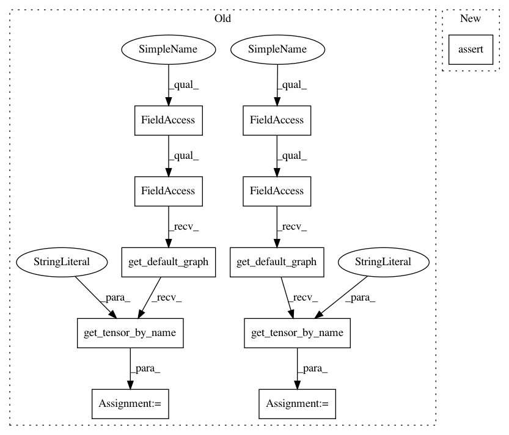

d67e08627198355a6d693807e15f8c74dfd23154,tests/garage/tf/q_functions/test_continuous_cnn_q_function.py,TestContinuousCNNQFunction,test_obs_not_image,#TestContinuousCNNQFunction#,199
Before Change
normalized_obs = build.call_args_list[0][0][1]
input_ph = tf.compat.v1.get_default_graph(
).get_tensor_by_name("state:0")
fake_obs = [np.full(env.spec.observation_space.shape, 255)]
assert (self.sess.run(normalized_obs,
feed_dict={input_ph:
fake_obs}) == 255.).all()
// ensure non-image obses are not normalized
// in get_qval_sym()
obs_dim = env.spec.observation_space.shape
state_input = tf.compat.v1.placeholder(tf.float32,
shape=(None, ) +
obs_dim)
act_dim = env.spec.observation_space.shape
action_input = tf.compat.v1.placeholder(tf.float32,
shape=(None, ) +
act_dim)
qf.get_qval_sym(state_input, action_input, name="another")
normalized_obs = build.call_args_list[1][0][1]
input_ph = tf.compat.v1.get_default_graph(
).get_tensor_by_name("Placeholder:0")
fake_obs = [np.full(env.spec.observation_space.shape, 255)]
assert (self.sess.run(normalized_obs,
feed_dict={input_ph:
After Change
// in _initialize() and get_qval()
normalized_obs = build.call_args_list[0][0][1]
assert normalized_obs == qf.inputs[0]
fake_obs = [
np.full(env.spec.observation_space.shape, 255.)
]
In pattern: SUPERPATTERN
Frequency: 3
Non-data size: 11
Instances
Project Name: rlworkgroup/garage
Commit Name: d67e08627198355a6d693807e15f8c74dfd23154
Time: 2020-05-15
Author: 44849486+maliesa96@users.noreply.github.com
File Name: tests/garage/tf/q_functions/test_continuous_cnn_q_function.py
Class Name: TestContinuousCNNQFunction
Method Name: test_obs_not_image
Project Name: rlworkgroup/garage
Commit Name: d67e08627198355a6d693807e15f8c74dfd23154
Time: 2020-05-15
Author: 44849486+maliesa96@users.noreply.github.com
File Name: tests/garage/tf/q_functions/test_discrete_cnn_q_function.py
Class Name: TestDiscreteCNNQFunction
Method Name: test_obs_is_image
Project Name: rlworkgroup/garage
Commit Name: d67e08627198355a6d693807e15f8c74dfd23154
Time: 2020-05-15
Author: 44849486+maliesa96@users.noreply.github.com
File Name: tests/garage/tf/q_functions/test_discrete_cnn_q_function.py
Class Name: TestDiscreteCNNQFunction
Method Name: test_obs_not_image
Project Name: rlworkgroup/garage
Commit Name: d67e08627198355a6d693807e15f8c74dfd23154
Time: 2020-05-15
Author: 44849486+maliesa96@users.noreply.github.com
File Name: tests/garage/tf/q_functions/test_continuous_cnn_q_function.py
Class Name: TestContinuousCNNQFunction
Method Name: test_obs_not_image